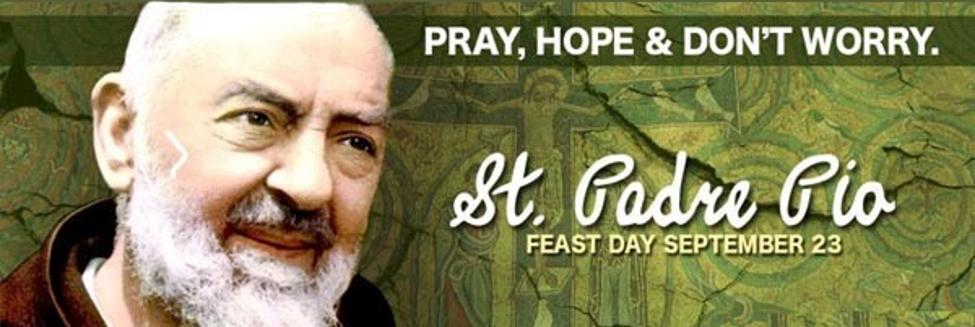
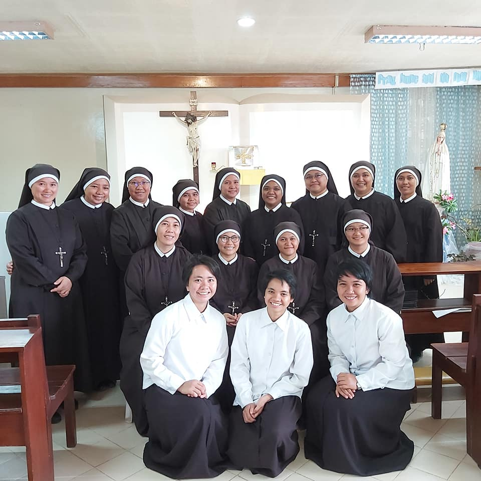

Padre Pio’s Home for Children, Inc. (PPHC) is a non-stock, non-profit and a catholic
institution, governed by Apostles of Jesus Crucified (AJC) Sisters and founded in the year 1997.
Padre Pio’s Home for Children Inc. aims to empower the underprivileged and the less fortunate
marginalized children for a better quality of life. It also hopes to sow the love of God to Children
Needing Special Protection by providing them care, security and other services towards self-
reliance and reintegration to their family and community.
The PPHC caters to children who are orphaned, abandoned, neglected, indigent and
members of dysfunctional families. The center provides services as shelter, education, health
assistance and sanitations, spiritual enhancement, socialization activities, guidance and
counseling and community involvement.
The residential institution caters children ages ranging from 3 to 18 years old who are
neglected, abandoned orphaned and voluntarily surrendered by their parents or immediate
relatives needing special protection and assistance. Under community-based program, the
institution caters indigent children, elementary, high school and college students who need
special assistance and guidance.
PPHC provides two kinds of programs for their clients: Residential-Based and
Community-Based Programs.
Residential-based program refers to the program provided to clients who reside in the
orphanage. This includes; Homelife/ Group Living Services, Medical and Dental Services, Spiritual
Enhancement/ Religious Services, Productivity/ Self-enhancement and capability development
and Social Services. Community-based Program is conducted for clients who goes home to their
respective families. Community-based program includes; Educational Services/Assistance,
Medical Services/ Assistance and Socio-cultural Activities.
Padre Pio's home for Children helped a lot of children right now, but our partner institution is having some issues/
challenges that are facing right now. We can't go out right now because of the pandemic, the only way that we could help
our institution is through social media. Wherein, we could create a website for our institution, and the pieces of
information that will be needed by the people that can see our webpage would be informed. With this, they could help us
in supporting our partner institution; also, we could improve our institution in solving their issues/ challenges that
they are facing right now.
Padre Pio`s Home for Children stems from the “Sisters, Apostles of Jesus Crucified.” The Sisters is a religious Institute
founded by father Domenico Labellarte, an Italian priest who was a spiritual son of St. Padre Pio for 26 years.
Providentially, the Institute founded a mission house here in the Philippines through the invitation of Msgr. Josefino
Ramirez who was the parish priest of San Lorenzo Ruiz Parish, Binondo Metro Manila.

Initially, the Sisters who were assigned here in the Philippine mission were dedicating themselves to work for the poor in
Binondo, however, as time goes by, they transferred to Mindanao – at Rambutan St. Tugbok, Davao City since someone
offered to donate a parcel of land where they could establish their mission home - the Padre Pio's Home for Children.